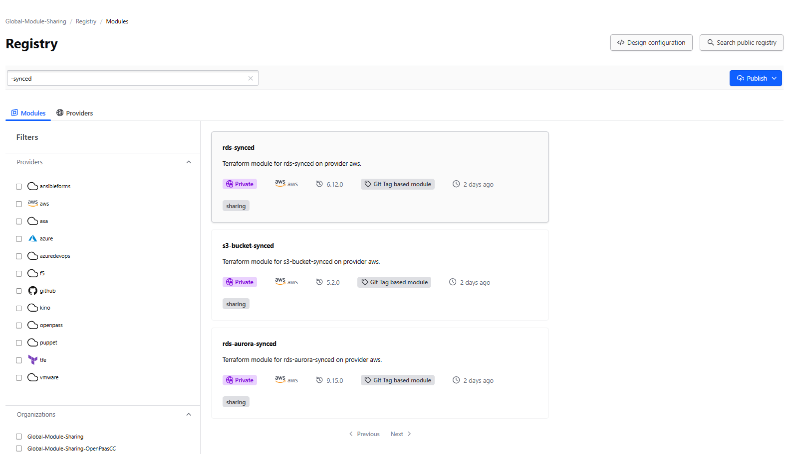

Terraform uses providers to interact with cloud providers, SaaS providers, and other APIs. Modules are containers for multiple resources that are used together.
There exists a curated list of allowed providers. MCM team only supports official HashiCorp providers.
terraform {
required_providers {
aws = {
# 'hashicorp' indicates that it is officially supported by HashiCorp
source = "hashicorp/aws"
version = "6.4.0"
}
}
}
Internally developped modules can be consumed without a doubt from the TFE registry.
Well-known public ones are synced as well and can be recognized with -synced suffix.
Attention: There is no active prevention of consuming public modules, only an advisory sentinel policy kicks in. You are accountable and responsible for the consequences.